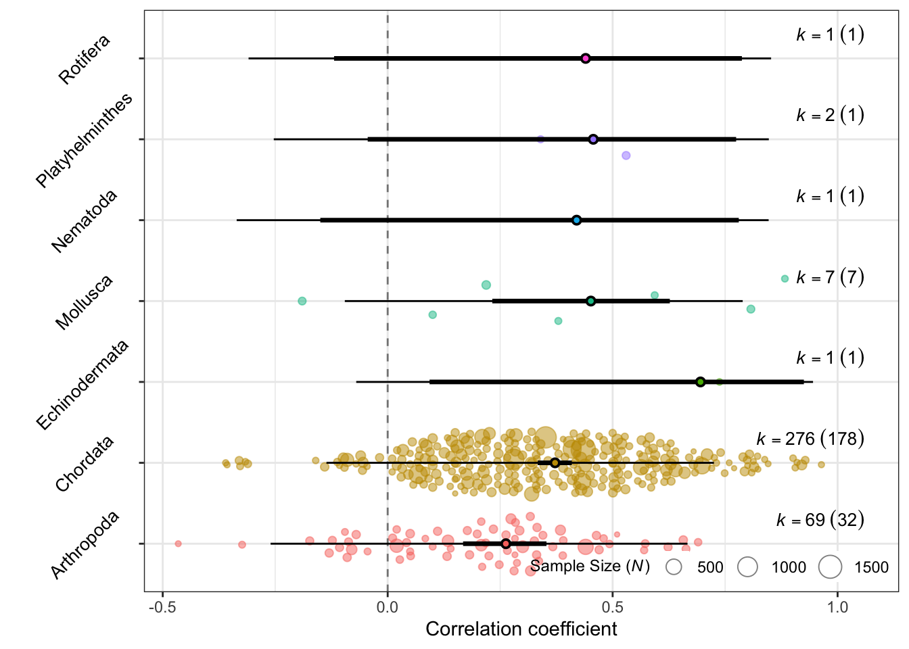
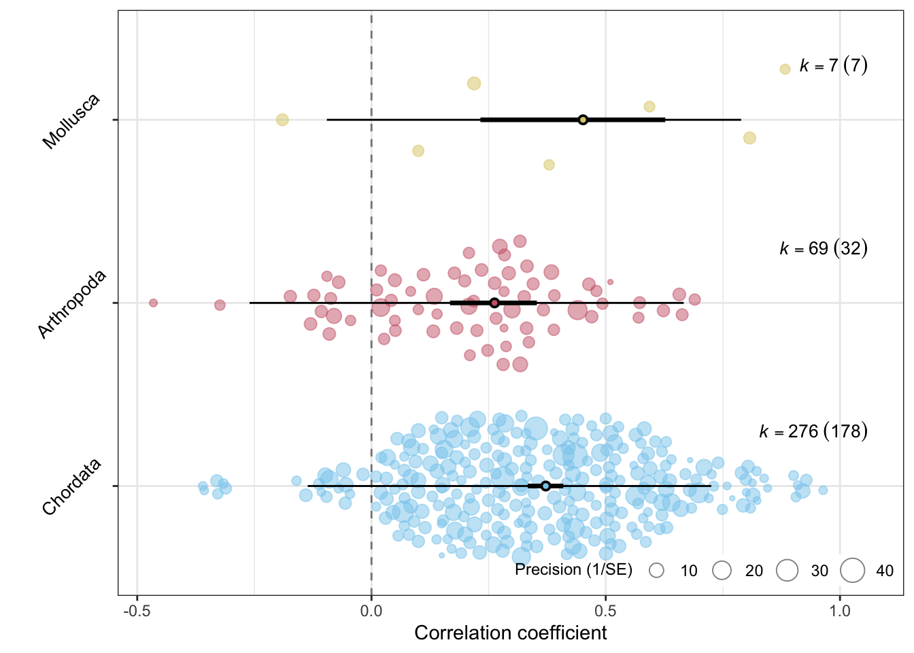
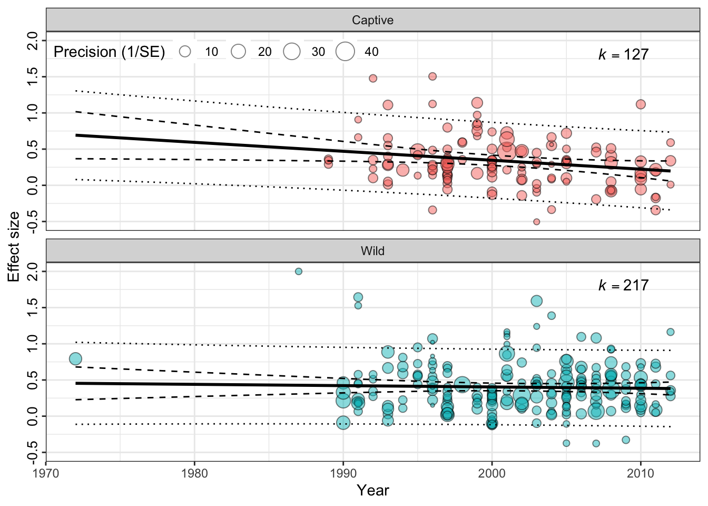

orchaRd 2.0 Tutorial: ESMARConf2023
1 How to Download and Install Orchard (vers. 2.0)
Orchard 2.0 is not yet on CRAN. You can download the package by visiting our GitHub page.
If you don’t already have the pacman package remember to unannotate code line 3
Techncially we don’t need all these packages to download orchaRd, but we’ll use them throughout the examples. orchaRd does rely heavly on the emmeans and tidyverse packages. You will need to ensure that you have R updated to the required version for emmeans to work as it has version requirements.
We also have a detailed vignette which will show much of it’s functionality.
2 Orchard and Bubble Plots
2.1 Lets load a dataset
We’ll use a very simple meta-analysis dataset that is attached to orchaRd to demonstrate how you can make orchard plots and bubble plots from meta-regression models. The data come from Lim, Senior, and Nakagawa (2014). This is a meta-analysis comparing correlation coefficients (rather Fisher’s Z Transformed Correlation), and is useful as it demonstrates a number of orchard plot functions
Code
Multivariate Meta-Analysis Model (k = 357; method: REML)
logLik Deviance AIC BIC AICc
-97.6524 195.3049 213.3049 248.0263 213.8343
Variance Components:
estim sqrt nlvls fixed factor
sigma^2.1 0.0411 0.2029 220 no Article
sigma^2.2 0.0309 0.1757 357 no Datapoint
Test for Residual Heterogeneity:
QE(df = 350) = 1912.9637, p-val < .0001
Test of Moderators (coefficients 1:7):
QM(df = 7) = 356.6775, p-val < .0001
Model Results:
estimate se zval pval ci.lb ci.ub
PhylumArthropoda 0.2690 0.0509 5.2829 <.0001 0.1692 0.3687 ***
PhylumChordata 0.3908 0.0224 17.4190 <.0001 0.3468 0.4347 ***
PhylumEchinodermata 0.8582 0.3902 2.1992 0.0279 0.0934 1.6230 *
PhylumMollusca 0.4867 0.1275 3.8175 0.0001 0.2368 0.7366 ***
PhylumNematoda 0.4477 0.3054 1.4658 0.1427 -0.1509 1.0463
PhylumPlatyhelminthes 0.4935 0.2745 1.7980 0.0722 -0.0444 1.0314 .
PhylumRotifera 0.4722 0.3021 1.5634 0.1180 -0.1198 1.0642
---
Signif. codes: 0 '***' 0.001 '**' 0.01 '*' 0.05 '.' 0.1 ' ' 1Here, we have fit a multi-level meta-regression model, with two random effects (Article / Study) and a within study variance. You will notice that we have a Phylum moderator as we are intersted in estimating the meta-analytic mean within each major phyla (Figure 1).
2.2 Orchard Plots
Using this model and data lets demonstrate how to make orchard plots. This can be done with the orchard_plot function.
If you’re not sure what arguments orchard_plot takes you can explore the vigette or ask for help using ?orchard_plot
orchard_plot takes a few essential arguments:
| Argument | Description |
|---|---|
| model | The metafor model object (e.g., rma.mv) |
| mod | The moderator of interest (as a character). If you don't specify it will default to the overall meta-analytic mean |
| data | The dataset used to fit the model |
| group | The group you wish to tally N for within brackets |
| xlab | The axis label for the effect size |
Code
orchaRd::orchard_plot(lim_MR, mod = "Phylum", group = "Article", data = lim, xlab = "Correlation coefficient", alpha = 0.5, transfm = "tanh", angle = 45, N = "N", cb = FALSE)
2.3 Subsetting levels in orchard plots
Figure 1 looks pretty bad. There’s very little data in most phyla. So, lets change this by restricting the plotting to only taxa with sufficient data. We can do this using the at argument to limit the prediction to only three phylo.
Here we’ll demonstrate a two step approach which can also provide a table of the meta-analytic means which can be used in publications
Code
# Use mod_results to first create a table. It takes the same arguments as orchard_plot()
lim_MR_results <- orchaRd::mod_results(lim_MR, mod = "Phylum", group = "Article",
data = lim, at = list(Phylum = c("Chordata", "Arthropoda", "Mollusca")), subset = TRUE)
# Now, we can feed in the mod_results() table directly to orchaRd
orchaRd::orchard_plot(lim_MR_results, data = lim, xlab = "Correlation coefficient",
transfm = "tanh", g = TRUE, angle = 45)
Ok, this is more useful, but lets also make a nice table with the mod_results to report in our meta-analysis, which we can see in Table 2.
Code
gt(lim_MR_results$mod_table)| name | estimate | lowerCL | upperCL | lowerPR | upperPR |
|---|---|---|---|---|---|
| Chordata | 0.391 | 0.347 | 0.435 | -0.1370 | 0.919 |
| Arthropoda | 0.269 | 0.169 | 0.369 | -0.2664 | 0.804 |
| Mollusca | 0.487 | 0.237 | 0.737 | -0.0956 | 1.069 |
2.4 Bubble plots
We often have moderators that are continuous in meta-analyis, particularly when considering things like publication bias. Here, bubble_plots can be extremely useful (Figure 3).
Code
# We'll add publication year in to the data and calculate the sampling variance
lim[, "year"] <- as.numeric(lim$year)
lim$vi <- 1/(lim$N - 3)
# Now, lets fit a meta-regerssion model that has an interaction between year and environment type.
model_lim2 <- metafor::rma.mv(yi = yi, V = vi,
mods = ~Environment * year,
random = list(~1 | Article,
~1 | Datapoint),
data = na.omit(lim))
# Just like orchard_plots we just now put the model in
orchaRd::bubble_plot(model_lim2, mod = "year", group = "Article", data = na.omit(lim), by = "Environment", xlab = "Year",legend.pos = "top.left")